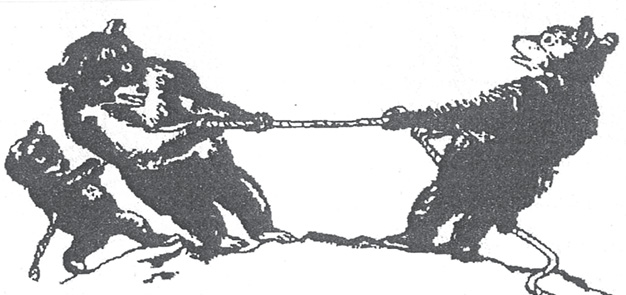
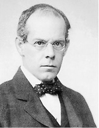
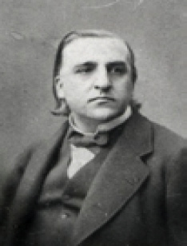
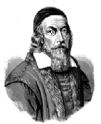
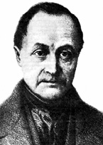

C
can (soul) 1. Varlıkların yaşamasını sağladığına ve ölümle varlıktan ayrıldığına inanılan madde dışı varlık; özellikle insan ve hayvanlarda yaşam tözü, yaşam ilkesi. 2. Yaşama, yaşam. Örneğin, “canından olmak” sözündeki “can”, bu anlamı yükleniyor. 3. Dirilik, güç. Örneğin, “Kolunu kaldıracak kadar canı kalmamıştı.” tümcesinde “can”, “gücünü yitirmek” anlamındadır. 4. Birey, kişi, insan. Örneğin, “Üç can besliyorum.” tümcesinde “can”, “kişi” anlamını taşıyor. 5. İç, gönül. Örneğin, “canı dondurma çekmek” sözünde “can”, “iç” anlamında kullanılmıştır. 6. İnsanın kendi varlığı, kendisi. Örneğin, “canını eve zor attı.” tümcesindeki “can”, “insanın kendi varlığı” anlamını taşıyor. 7. Alevilik, Mevlevilik gibi tarikatlarda yol kardeşi, kardeş. Örneğin, ”Gelin canlar bir olalım”. tümcesindeki “can” sözcüğü, “kardeş” anlamını yansıtıyor.
cancılık (animism) 1. Doğadaki her varlıkta bir ruh bulunduğu, her nesneyi bir ruhun yönettiği yolundaki ilkel inanç. Bu inanç, din kurumuna kaynaklık ediyor. 2. Ruhu bedenin ilk nedeni ve canlandırıcısı sayan, ruhsal olayları oldukları gibi; yaşamla ilişkili olayları da düşünen bir ruhun yönettiğini savunan öğreti.
canına kıyma Bkz. intihar.
canlıcılık (animism) 1. Doğanın bir bütün olarak ve her varlığın teker teker maddi varlığının ötesinde bir de ruha sahip olduğunu kabul eden görüş; animizm. Bkz. ruhçuluk. 2. Doğal olaylar, hayvanlar ya da doğada var olan başka nesnelere bir ruh yakıştırarak bunlara tapınmaya dayanan din anlayışı.
canlı huylular Bkz. Gallen’ın huy sınıflaması.
Cannon-Bard duygu kuramı (Cannon-Bard theory of emotion) Bilinç düzeyinde yaşanan duygularla bunlara eşlik eden fizyolojik tepkileri yalnızca talamusun denetlediğini ortaya koyan kuram; talamik duygu kuramı. Bu kurama göre, duygu oluşturan olay ya da uyarımları algılayan talamus, bu bilgileri öznel duygu deneyimi sağlamak üzere anında beyin kabuğuna; fizyolojik uyarım olarak da iskelet kaslarına ve özerk sinir sistemine iletiyor.
can sıkıntısı (boredom) Kişinin ilgilenebileceği alanlar, etkinlikler ya da yaşamında bir anlam bulamaması durumunda beliren duygu. Bu duygu, tekdüze çalışma, algısal yoksunluk, tecrit edilme gibi dış sınırlamalar ya da iç ketlemeler nedeniyle ortaya çıkıyor. Fenichel’e göre, nevrotik can sıkıntısı, içgüdüsel amaç yokluğu yüzünden ortaya çıkan bir gerilim durumudur. Canı sıkılan kişi, kendisinde olmayan içgüdüsel bir amaç bulma konusunda kendisine yardım etmek için bir nesne aramaya başlıyor. Bir şey istediğini bilen; ama ne istediğini bilmeyen bu kişi, sürekli bir gerginlik ve huzursuzluk yaşıyor. Konuya, benzer; ama kuramsal bakımdan farklı bir yakyaşımı da V. Frankl getirmiştir. Ona göre can sıkıntısı, kişinin, yaşamında bir anlam bulamaması nedeniyle içine düştüğü varoluşsal boşluktan doğuyor. Örneğin, pazar günü sendromu, bu nedenle yaşanıyor. İş koşuşturmasından sonra kendisiyle baş başa kalan kişi, yaşamındaki anlamsızlığı, varoluşsal boşluğu duyumsuyor. Bkz. logoterapi.
CAT (Children Apperception Test) 3-10 yaşları arasındaki çocuklar için hazırlanmış olan test. Bu test, hayvanlara ilişkin sahneleri insanlarla ilgili ortamlarda ve insan etkinlikleri içinde gösteren on resimden oluşuyor. Testi uygulamada, TAT gibi, standart uyarıcının algılanmasının bireyden bireye ayrım gösterdiği varsayımından yola çıkılarak kişilik özelliklerini tanıma amaçlanıyor. TAT’tan ayrıldığı nokta, onun yetişkinler için; CAT’ın ise çocuklar için hazırlanmış olmasıdır. CAT’taki resimler, çocuğun beslenme, sözel sorunlarına karşı tepkisini ortaya çıkaracak biçimde düzenlenmiştir. Resimler ayrıca çocuğun rekabet sorununu, anne babasına ya da bunların yerine koyduğu kişilere karşı tepkilerini de aydınlatıyor. Çocuğun grup içindeki, okuldaki, evdeki tepkilerini etkileyen etkenlerin saptanmasında bu test başarıyla kullanılıyor. Psikanalist, psikiyatrist, psikolog, rehberlik ve psikolojik danışma uzmanı gibi öğretmen de bu testten yararlanabiliyor. Testten, oyun tekniği ile tedavide de yararalanılıyor. Kendine özgü bir uygulama biçimi olan CAT, çocukla uygulayıcı arasında bir dostluk havası oluşturulduktan sonra veriliyor ve ondan, testteki resimlerle ilgili bir öykü anlatması isteniyor. Resimde gördüklerinin neler olduğunu, hayvanların neler yaptığını anlatması isteniyor. Anlatım sırasında gerektiğinde çocuk destekleniyor. Aşağıdaki resimde ipin bir ucunda bir ayı, öbür ucunda başka bir ayı ve bir yavru ayı bulunuyor. Bunlar ipi kendilerine doğru çekiyorlar. Örneğin bu resim çocuğa verildiğinde, yavru ayının kendi tarafında bulunan ayıyı baba mı yoksa anne mi kabul ettiğine dikkat ediliyor. Bu resimle ilgili olarak anlatılanlardan, saldırganlık korkusuyla birlikte önemli bir kavga, çocuğun kendi saldırganlığı ya da kendi kendini yönetme isteğinin gerçekleştirilmesi eğilimleri ortaya çıkarılabiliyor. İlginin kimi zaman da ipe yöneltildiği görülüyor. Örneğin, ipin kopması, bir oyun olarak görülebileceği gibi, kopuşu izleyecek olan bir ceza korkusu ya da yalnızca mastürbasyonla ilgili bir simge olarak da yorumlanabiliyor.

CAT’ tan Bir Örnek
CATTELL, James Mc Keen (1860-1944) Amerikalı psikolog ve yayıncı. Dünyadaki ilk psikoloji profesörü ve deneysel psikolojinin öncülerinden biri. Cattell, Easton’da doğdu; Lanchester’da öldü. Lafayette College’ı bitirdikten sonra gittiği Almanya’da Göttingen Üniversitesi’nde felsefeci Rudolf Hermann Lotze ile; Leipzig Üniversitesi’nde de Wilhelm Wundt ile çalıştı. 1881-1882 yıllarında Johns Hopkins Üniversitesi’nde psikolog G. Stanley Hall’ın öğrencisi oldu. 1886’da aynı üniversiteden doktora derecesini aldı. 28 yaşında psikoloji profesörü olarak 1888’de çalışmaya başladığı Pennsylvania Üniversitesi’nde bir psikoloji laboratuvarı kurulmasına katkıda bulundu. 1891’de başına getirildiği Columbia Üniversitesi Psikoloji Bölümü’nde zihin testleri geliştirme çalışmaları yaptı. 1894’te psikolog James Mark Baldwin’le birlikte Psikoloji Dergisi’ni kurdu. 1894-1944 arasında Bilim dergisinin editötlüğünü yaptı. 1900- 1915 arasında Popüler Bilim Dergisi’ni; 1915-1943 arasında da Bilim Dergisi’ni yayımladı. 1917’de zorunlu askerlik yaptırılmasını eleştirmesi nedeniyle Columbia Üniversitesi’nden çıkarıldı. 1921’de eğitim ve sanayi alanında araştırma yapma amaçlı Psikoloji Derneği’ni kurdu. ABD’de Galton’un başlattığı bireysel ayrılıklar psikolojisi akımını sürdürdü. Galton’un geliştirdiği zekâ testlerini daha da yetkinleştirdi. Cattell, insan kapasitesinin sınırlarının ortaya çıkarılmasını çalışmalarının ana konusu yaptı. Çalışmalarında Darwin’in araştırma yöntemlerinden dolaylı olarak; Galton’unkilerden ise doğrudan etkilendi. Kurduğu psikoloji laboratuvarlarındaki çalışmalarıyla deneysel psikolojinin öncüleri arasında yer aldı. Galton’un izinden giderek bireyin zihinsel kapasitesinin normal değişkenlik dönemlerini inceledi ve elde ettiği verileri istatistiksel yöntemlerle psikolojiye uyguladı. Özellikle tepki süresi, algı ve sözcük çağrışımı gibi konularda yaptığı deneyleriyle özel bilişsel yetileri belirlemeyi amaçlayan ilk psikolojik testleri geliştirerek psikolojiye büyük katkı yaptı. Onun bireysel değişkenlik ve özellikle uyarılan şiddete tepki süresine ilişkin yaptığı araştırmalar, psikoloji ile felsefe arasındaki bağı güçlendirmiş; psikolojinin biyoloji ve fizikle ilişkisini de artırmıştır.

CATTELL, Raymond Bernard (1905-1998) İnsanın kişilik yapısına ilişkin çalışmalarıyla tanınan İngiliz psikolog. Cattell, İngiltere’de Staffortshire’da doğdu. 16 yaşında Londra Üniversitesi’ne girerek fizik ve kimya eğitimi aldı. Bu sırada psikolojiye duyduğu ilgi nedeniyle University College Laboratuvarı’nda beş yıl, Spearman’la birlikte araştırmacı olarak çalıştı. 1929’da King’s College’dan doktora derecesi aldıktan sonra Exeter Üniversitesi’nde ders vermeye başladı. Okullara psikolojik hizmet vermeye yönelik çalışmaları yönetti. Bir yıl, Columbia Üniversitesi’nde E. L. Thorndike ile birlikte laboratuvar araştırmacısı olarak çalıştı. Clark ve Harvard üniversitelerinde ders verdi. II Dünya Savaşı’nda ABD ordusunda personel seçimine yardımcı oldu. Savaş sonrasında araştırma görevlisi olarak çalıştığı İllinois Üniversitesi’nde Kişilik ve Grup Analizi Laboratuvarı’nı kurdu. İnsan kişiliğini nesnel ölçütlerle açıklamaya çalışan Cattell, İngiliz Psikoloji Okulu’ndan etkilenerek davranışta biyolojik öğelere ağırlık verdi. Ona göre organsal bir nitelik taşıyan insan davranışlarının karmaşıklığı, çok nedenselliğin araştırılmasını olanaklı kılan bir yöntemin bulunmasını gerektiriyor. Cattell, kişiliğin temel özelliklerinin belirlenmesi için Spearman’ın faktör analizi yöntemini kullanarak, kişiliğin incelenmesinde öznelliği azaltmaya çalıştı. Özellikle tepki süresi, algı ve sözcük çağrışımı gibi konularda yaptığı deneyleriyle özel bilişsel yetileri belirlemeyi amaçlayan ilk psikolojik testleri geliştirerek psikolojiye büyük katkı yaptı. Zekânın doğuştan gelen akışkan zekâ ve kültürün koşullandırdığı kristalleşmiş zekâ olarak ikiye ayrılabileceğini savundu. Ona göre kuram, araştırmalara dayanmalı ve deneysel araştırmalara yön vermelidir. Tek bir örnekten yola çıkılarak ede edilen sonuçlar sınanmalıdır. Cattell’e göre temel kişilik özellikleri, insanlığın kültürler arası nitelikteki kökleşmiş evrensel özellikleridir. Farklı toplumlarda kişilik özelliklerini tanımlayan öğeler arasındaki karşılıklı ilişkiler değişmemektedir. Davranışçı okul sosyal bilimcileri, Cattell’in yöntemsel önerisinin matematiksel yetkinlik açısından eksik olduğu savıyla bunu eleştirmişlerdir. Birçok makale ve kitap yayımlamıştır. Başlıca yapıtları: An Intrıduction to personality Study, 1950 (Kişilik Araştırmasına Giriş); Personality: A Systematic Theorytical and Factual Study, 1950 (Teorik ve Olgusal Sistematik Bir Araştırma); Handbook of Multyivariate Experimental Psychology, 1966 (Çok Değişkenli Deneysel Psikoloji El Kitabı); The Scientıfic Use of Factor Analysis, 1978 (Faktör Analizinin Bilimsel Kullanımı). Bkz. faktör kuramı; kişilik alanı; kaynak kişilik özellikleri; yüzey kişilik özellikleri.
cemiyet Bkz. toplum.
cevap Bkz. yanıt.
ceza (punishment) Bir davranımın yapılışından sonra ve ona bağlı olarak, bir itici uyarıcının uygulanması. Cezanın amacı, istenmeyen davranışı ortadan kaldırmak ya da sıklığını azaltmaktır. Ceza, yapılan davranımdan sonra itici uyarıcının verilişinden başka, ortamda yer alan ve organizma açısından olumlu pekiştirecin ortadan kaldırılması biçiminde de uygulanıyor. Davranım sıklığını azaltmada ikinci yol, daha etkili oluyor. Ceza, davranış değiştirme tekniklerinden biridir. Bkz. ceza çektirici ceza; davranış değiştirme teknikleri; eğitici (geliştirici) ceza; ödül ve ceza; ödünleyici ceza; zararlı ceza.
ceza çektirici ceza (expiatory punishment) Piaget’ye göre karşılık ödeme adaleti kapsamında, 7-8 yaşlarına dek çocuklarda egemen olan adalet anlayışı. Bu anlayışa göre ceza, haklı ve gereklidir; ne denli ağırsa, o denli haklıdır. Cezanın, yapılan davranışa uygun olup olmaması önemli değildir. Hatalı davranışın karşılığı olarak ceza çekilmelidir. Görüldüğü gibi, başkalarına bağımlılık aşamasındaki çocuklarda, ceza çektirici ceza, haklı görülüyor. Bkz. bilişsel gelişim kuramı; ceza; ödünleyici ceza.
cezalandırma Bkz. ahlak (Kohlberg’e Göre Ahlak Gelişimi); büyük, ortanca, küçük ve tek çocukta kişilik gelişimi; ceza.
ceza yeterliği Bkz. delilik.
CHARCOT, Jean Martin (1825-1893) Klinik nörolojinin dağınık durumdaki deney ve bilgi birikimini sınıflandıran Fransız nörolog. Charcot, Paris’te doğdu. Bir akciğer ödemi yüzünden aniden yine Paris’te öldü. 1848’de tıp fakültesini üstün başarı ile bitirdikten sonra Salpétriére Hastanesi’nde yardımcı asistanlığa başladı. 9 yıl Rayer ile patolojide çalıştı. Tıbbın kalp, akciğer, böbrek hastalıkları ve romatizma gibi değişik konularında patoloji temelli araştırmalar ve yayınlar yaptı. Sonra bu dağınık bilgi birikiminden sağlam bir nöropatoloji çıkardı. 1603’te yapılan ve sokakları, meydanları, bahçeleri, 45 yapısıyla uçsuz bucaksız bir alanı kapsayan bu hastane, onun adıyla özdeşleşti. Bu hastane, 18. yüzyılda akıl hastalarının uzun yıllar yatırıldığı bir depo görevi yapmıştı. Charcot burada göreve başladığında hastanede, üç bin kadar nöroz ve sara (epilepsi) olmak üzere toplam beş bin kadar hasta bulunuyordu. Charcot, bu hasta çeşitliliğinden yararlanarak nöropatoloji temelinde yükselen sağlam bir klinik nöroloji yapısı kurdu. Burası, bir düşkünler yurdu olmaktan çıkıp döneminin en büyük nöropatoloji laboratuvarına ve patoloji müzesine sahip bir merkez oldu. 1870-1890 arasında Charcot, nöroloji dünyasının tanınan ve saygı duyulan ünlü bir nöroloji hocası olmuştu. 600 kişilik anfide verdiği Salı dersleri ile daha sonra buna eklenen Cuma derslerini hemen her zaman bir ya da birkaç yabancı bilim adamı da izliyordu. Charcot’nun büyük ilgi alanlarından ikisi histeri ve sara idi. Hastanede bu nöbetleri geçiren kadın hastalar için özel bir bölüm kuruldu. Charcot’nun kliniğine gelen ünlü bilim adamlarının arasına 1885 sonbaharında S. Freud da katıldı. Bu ikili, histeri üzerine ilginç tartışmalar yaptılar. Salpétriére’de nöroloji dalında ilk profesörlük sanı 1882’de Charcot’ya verildi. Bu büyük hoca, hem öğrencilerinin hem de birçok bilim insanının yetişmesini sağladı. Fransızca dışında dört dil bilen Charcot’nun, bilim, sanat ve politika adamları üzerinde şaşırtıcı bir etkisi vardı. 36 yaşında iken en büyük bölümün başına getirilen Charcot, ilk iş olarak kendi parasıyla küçük bir patoloji laboratuarı kurdu. Klinik yeniden düzenlendi, düzenli hasta ziyaretleri başlatıldı ve nörolojik muayene yöntemleri standartlaştırıldı. Göz dibi incelemesini, termometre kullanımını ilk kez Charcot başlattı. Çağcıl nörolojinin temel taşlarını oluşturan nöropatoloji, nörooftalmoloji ve klinik psikolojiyi ayrı üniteler olarak kurdu. 1865’te bir sinir sistemi hastalığı olan amyotrophic Sclerosis’u belirleyip tanımladı. Frengi, çocuk felci gibi birçok hastalık tablosunun tanımlanmasını sağladı. Bu hastanede verdiği dersler, kendisi ve öğrencileri tarafından 5 ciltte toplanarak yayımlandı. Bu büyük hastane, onun etkisiyle uzun yıllar saygınlığını sürdürdü. Klinik nöroloji, onun öncülüğü ile bütünlüğü olan bir tıp disiplini haline geldi. Wechsler’in dediği gibi nörolojiyi çocukluk çağından yetişkinlik çağına o ulaştırdı. Başlıca yapıtları: Leçons sur Les maladies du systéme nerveux faites a la Salpétriére, 1872-1893 (Sinir Sistemi Hastalıkları Üzerine Salpétriére’de Verilen Dersler); Leçons sur les localisations dans les maladies du cerveau, 1876 (Beyin Hastalıklarının Lokalizasyonu Üzerine Dersler); Lectures on the Disea ses of the Nervous System, Delivered at the Salpétriére, 1877-1889 (Sinir Sistemi Hastalıkları Üzerine Salpétriére’de Verilen Dersler); Lectures on the Pathological Anatomy of the Nervous System, Diseases of the Spinal Cord, 1881 (Sinir Sisteminin Patolojik Anatomisi Üzerine Dersler, Omurilik Hastalıkları); Lectures on the Localization of Cerebral and Spinal Diseases, Delivered at the Faculti of Medicine of Paris, 1983 (Beyin ve Omurga Hastalıklarının Lokalizasyonu Üzerine Paris Tıp Fakültesinde Verilen Dersler); Contribution a l’étude de l’atrophie musculaire progressive type Duchenne-Aran (ö.s.), 1895 (Duchenne-Aran Tipi İlerleyen Kas Atrofisinin İncelenmesine Katkı); Les centres moteurs chez l’homme (J.A.Pitres ile) (ö.s.), 1895 (İnsanda Beyin Zarı Hareket Merkezleri).

CHOMSKY, Noam (1928- ) Amerikalı eğitimci, dilbilimci, kuramcı. Amerika’da Philadelphia’da doğdu. Chomsky, Pennsyilvania Üniversitesi’nde dilbilim eğitimi aldıktan sonra 1955 yılında Massachussets Teknoloji Enstitüsü’nde çalışmaya başladı. Başta kabul görmemesine karşın, daha sonra dilbilim ve psikolinguistik alanlarında dünya çapında etkili bir kuramcı oldu. Onun bütün dünyada tanınmasında, savaş karşıtı, barış yanlısı eylemlerde yer alması ve başkaldırıcılığı da etken oldu. Örneğin, Vietnam Savaşı’na katılmayı reddetti. Chomsky, Skinner’ın dil yorumuna şiddetle karşı çıktı. Dili hem biyolojik hem de psikolojik yönden inceledi. O yıllarda dil ediniminin doğuştan mı geldiği, yoksa sonradan mı öğrenildiği alabildiğine tartışılıyordu. Bu konuda Chomsky, özetle şu kuramını ortaya koydu: Çocukların dil ediniminde evrensel düzlemde, 3-10 yaşları arası gibi kritik bir dönem vardır. Bu dönemden sonra dil öğrenme, çok zorlaşıyor. Dil öğrenme mekanizmaları, dışardan yardıma gereksinim duyulmadan, zamanı gelince kendiliğinden işe koyuluyor. Hemen bütün çocuklar, aynı evrede aynı dil yanlışlarını yapıyorlar. Bu bulgular, dil ediniminin, insan beyninin doğuştan gelen bir yapısı ya da işlevi olduğunu gösteriyor. Öyleyse dilin yüzeysel yapısının altında, tüm insanlarda, dolayısıyla tüm dillerde ortak olan derin bir yapı bulunmaktadır. Chomsky’nin yayımlanmış birçok makalesinin yanı sıra, biri roman olmak üzere birçok kitabı vardır. Başlıca yapıtları: Syntactic Structures (roman, 1957), CartesianLinguistincs::A Chapter in the History Rationalist Thought (1966), Current Issues in Linguistic Theory (1964), Language and the Mind (1986), On Nature, Use and Acguisition of Language (1990). Bkz. dil edinimi; dil edinim mekanizması; dönüşümsel dilbilgisi; edim; evrensel dilbilgisi; psikolinguistik.
ciddi duygusal bozukluk (serious emotional disturbance) 18 yaşın altındakilerde DSM ve ona karşılık gelen ICD tanı ölçütlerine uyan zihinsel, duygusal ya da davranışsal bozukluklar. Ciddi duygusal bozukluklar, belirli bir ruh hastalığına bağlanamayan rahatsızlıklar olarak nitelendiriliyor. Bu bozukluklar, çocuk ya da gencin eğitimini aksatıyor; başarısını düşürüyor; öğrenme yeteneğini zedeliyor; doyurucu toplumsal ilişkiler kurmasını engelliyor ya da uygunsuz davranışlar yapmasına neden oluyor. Bu bozuklukta çocuk ya da genç, genel bir mutsuzluk yaşıyor, çöküntüye giriyor. Kişisel ya da okulla ilgili korkular duyuyor. Anne babasıyla anlaşmazlık çıkarıyor. Hasta rolü yapıyor. Arada bir antisosyal davranışlar gösteriyor; kaygıya giriyor. Yeme bozuklukları gösteriyor. Dohr tepkileri veriyor. Bkz. davranış bozukluğu.
cinnet getirme (become insane) Çıldırma, delirme.
cins (sex) 1. Erkekle kadını birbirinden ayıran genetik (cinsellik kromozomları) ve anatomik (bedensel yapı), fizyolojik (hormonlar), ruhsal ayrılıklar; seks, cinsiyet. 2. Bu biçimde farklılaşan cinslerden her biri. 3. Cinsel etkinliklerden alınan haz, elde edilen doyum.
cinsel (sexual) Erkeklik ve dişilikle ilgili; cinsi. Bkz. cinsellik.
cinsel ayrılıklar (sex differences) Kadın ve erkek arasında istatistiksel olarak anlamlı bulunan beden yapısı, cinsel organlar gibi ayrılıklar. Bunlar, birincil cinsel özellikler ve ikincil cinsel özellikler gibi bedensel ayrılıklar ile belli davranış yapıları, zihinsel yetenekler gibi zihinsel-ruhsal özellikler de olabiliyor. Terim, daha çok, zihinsel-ruhsal yetenekler, başarı, davranış yapıları gibi ayrılıklar için kullanılıyor. Bu alanda pek çok araştırma yapılmasına karşın, konuya tam bir açıklama getirilememiştir. Gerçekte, cinsler arasındaki ayrılıkların kendisinden çok, bu ayrılıkların nasıl açıklandığı önem taşıyor. Bugün, toplumsal-ekonomik statü, yetişme koşulları gibi etkenler denetlendiğinde, örneğin, zekâ düzeyi, akademik başarı, kariyer ve benzeri alanlarda cinsler arasında ayrılıklar olmadığı biliniyor.
cinsel bez (genital gland, sexual gland, gonad) Üremeyi gerçekleştiren bezler. Olgunlaşmış sperm ya da yumurta. Üremede genetik bilgilerin yarısını (insanda 23’ünü) içeren hücre demek olan gamet, üreten üreme hücreleri ile bu hücreleri saran dokulardan oluşuyor. Dişilerde yumurtalık; erkeklerde de testis, cinsel bezlerdir. Bkz. cinsellik.
cinselbilim Bkz. seksoloji.
cinsel birleşme Bkz. cinsel ilişki.
cinsel birliktelik ve orgazm Bkz. insanın sekiz çağı ((6) Yalnız Kalmaya Karşı Yakınlık Uygusunun Gelişimi).
cinsel bozukluklar (sexual disorders) Cinsel güçsüzlük, cinsel soğukluk gibi cinsel davranış ve işleyişle ilgili bedensel ya da ruhsal bozukluklar.
cinsel bölgeler (erogeneus zones) Bedenin dokunmaya duyarlı olan ve uyarımı cinsel heyecan yaratan bölgeleri; erojen bölgeler. Klasik psikanalizde vücudun ağız, anüs, cinsel organlar gibi cinsel içgüdünün (libidonun) kendini dışa vurduğu bölgeleri ile göğüsler, cinsel organların çevresi, kulak, burun gibi vücudun diğer açılışları cinsel uyarıma elverişli bölgeleridir. Normal bir cinsel gelişime bağlı olarak, ilk erojen bölge ağızdır. Ondan sonra anüs bölgesi önem kazanıyor. Onu da cinsel organların önem kazanması izliyor. Bkz. cinsellik; ruhsal-cinsel gelişim kuramı; cinsel sömürü.
Cinsel Bölgeler ve Cinsel Tepkiyle İlgili Kimi Yanlış Anlamalar Bkz. cinsel tedavi.
cinsel dönem Bkz. ruhsal-cinsel gelişim kuramı.
cinsel dürtü (sexual drive) Cinsel doyuma ve en son anlamda üremeye yönelik temel bir tepi; cinsel içgüdü. Açlık ve susuzluk gibi temel dürtülerden farklı olarak cinsel dürtünün doyurulmaması, yaşamı tehlikeye sokmuyor. Ancak, soyun sürmesi, bu dürtünün gerektirdiği eylemin gerçekleştirilmesine bağlı bulunuyor. Öteki hayvanlardan farklı olarak bu dürtü insanda mevsime, kızışma döngüsüne çok daha az bağlıdır. Daha çok, deneyimle, öğrenmeyle biçimleniyor ve daha çok çeşitlilik gösteriyor. Bkz. içgüdü kuramı.
cinsel eğitim Bkz. ruhsal-cinsel gelişim; ruhsal-cinsel gelişim kuramı.
cinsel elezerlik (sexual sadism) Kişinin haz duymak, cinsel doyum sağlamak için karşısındakini bilinçli olarak bağlama, dövme, küçük düşürme ya da başka biçimlerde karşısındakine acı çektirme eylemlerine gereksinim duyması; seksüel sadizm. .Bkz. cinsel özezerlik.
cinsel evriklik (sexual inversion) Karşı cinsin özelliklerini taşıma ya da onların rol ve özelliklerini benimseme.
cinsel gelişim (sexual development) Cinsel dürtünün doğumdan başlayarak cinsel olgunluğa dek geçirdiği türlü gelişim aşamaları. Bkz. ruhsal-cinsel gelişim; ruhsal-cinsel gelişim kuramı.
cinsel gizillik (sexual latency) Freud’a göre, çocuk cinselliğinin yaklaşık olarak 5 yaşından 11 yaşına dek baskı altına alınıp bilinçdışına itilmiş olması. Bkz. ruhsal-cinsel gelişim kuramı ((4) Gizil dönem).
cinsel güçsüzlük (sexuel impotence, sexuel impotency) Cinsel birleşimde boşalım ya da ruhsal doyum sağlayamama durumu.
cinsel heyecan (sexual arousal) Cinsel içerikli rüyalar, düşlemler, erotik kokular ya da cinsel ilişki gibi etkenlerle cinsel organların uyarılması ve bu uyarılma sonucunda ortaya çıkan hormonal, salgısal ve bedensel değişiklikler. Bu değişikliklerin başında penisin dikleşmesi ve yağlayıcı bir sıvı salgılaması; kadında klitorisin sertleşmesi ve döl yolunun ıslanması geliyor.
cinsel heyecan bozuklukları (sexual arousal disorders) Cinsel ilişkiye yeterince isteğin ve mekanik uyarımın olmasına karşın, cinsel heyecana eşlik eden penis sertleşmesi, vajinanın ıslanması gibi uygun fizyolojik tepkilerin gelişmemesi biçimindeki cinsel işlev bozuklukları. Bkz. dikleşme bozukluğu; kadında cinsel heyecan bozukluğu.
cinsel hoşnutsuzluk (sexual dysphoria) Kişinin anatomik cinsel yapısından rahatsızlık duyması. Bu rahatsızlık, kişinin cinsel hoşnutsuzluğu ile ilişkili olabiliyor ve kişi, bedensel yapısı ile cinsel kimliği arasında bir uyum sağlama; yani cinsiyet değiştirme arayışına girebiliyor. Bu terim, toplumca öngörülen cinsel rolüne ilişkin rahatsızlıkla cinsellik bağlamında bedensel yapı konusunda duyulan rahatsızlığı birbirinden ayırmak için kullanılıyor.
cinsel içgüdü (sexual instinct) Psikanalize göre, insanı her türlü haz arayışına yönelten temel içgüdü; libido, yaşam enerjisi, cinsel dürtü. Yalnızca cinsel dürtüleri kapsamadığı anlaşılan bu içgüdü, ağızcıl ve dışkıl dışavurumları, açlık ve susuzluk gibi öz koruyucuları da içeriyor. Freud, çocukların belirli davranışlarını cinsel içgüdülere dayandırıyor. Ona göre bunun birkaç nedeni vardır. Bunların başında geleni, insanın geleceğinin, çocukluğunun toprağında yeşermesidir. 22 yaşındaki koşucu, bir yaşında iken emekleyen kişiydi. Ünlü yazar, bir zamanlar, anlamsız sesler çıkarıyordu. Üç çocuk sahibi olan anne babanın, yıllar önce, çocuksu cinsel istek ve eğilimleri vardı. Çocuk, bütünüyle büyüyüp geliştikten sonra yetişkin insan durumuna geliyor; kendini yetişkinlere özgü hareketlerin, konuşma yazma etkinliklerinin ve cinsel yaşamın içinde buluyor. Cinsel gelişim, bedendeki kimyasal değişim özellikleriyle ilişkili olarak gerçekleşiyor. Bu kimyasal değişiklikler, kişiyi cinsel davranışlara iten cinsel (erojen) bölgeleri uyarıyor ve insanı o bölgede kimi cinsel eylemlere geçmeye yöneltiyor. Bu basit cinsel süreçler, zamanla karmaşık, zengin ve olgun bir bütünlüğe erişiyor. Freud’un cinsel içgüdüleri öne çıkarması ve insan davranışlarının pek çoğunu bu içgüdülere bağlaması, dün olduğu gibi bugün de eleştirilmekle birlikte, daha önce cinsellikle ilişkisi olmadığı sanılan pek çok tutum ve davranışı cinsel içgüdülerle açıkladığı da bir gerçektir. Örneğin, birçok ruhsal bunalımın cinsel nedenlere dayandığını Freud ortaya çıkarmıştır. Çok eleştirilmekle birlikte, Freud’un libido kuramı, saldırganlık kuramına göre, daha çok tutunmuştur. Freud’un libido (cinsel dürtü) terimi, “haz veren herhangi bir nesne ya da uyarana yönelme” anlamını dile getiriyor. Bu kavram, oldukça karmaşık dürtü öğelerinden oluşuyor. Her dürtü öğesi, örneğin ağızcıl, dışkıl, genital bölgelerin her biri, kendi kaynağının özelliğini taşıyor. Bkz.Eros; içgüdü kuramı (Çatışma); ruhsal-cinsel gelişim kuramı.
cinsel ilişki sexualintercourse, sexualcongress) Erkeğin penisinin, kadının döl yoluna (vajinasına) girmesi ve boşalımın gerçekleşmesi eylemi; çiftleşme, cinsel birleşme. Bkz. cinsel istek; cinsellik; cinsel organ; vestibüler bezler.
Cinsel İlişkide İletişimi Kolaylaştıran Yollar Bkz. cinsel tedavi.
cinsel istek (sexual desire, sexuality) 1. İnsanın özellikle bedensel isteklerinin aşırılığı; şehvet. 2. Cinsellik ve cinsel duygularla ilişkili özel heyecanlar.
cinsel isteksizlik (anaphrodisia) Cinsel ilişkiden tat almama, duygulanmama, bir tür soğukluk; cinsel soğukluk. Sağlıklı bir beden yapısına sahip olan bir kişinin cinsel isteksizliği, ruhsal nedenlere dayanıyor. Kişi, cinsel isteği engelleyen bir savunma mekanizması ya da nevrotik bozukluk geliştirmiş olabiliyor. “Anaphrodisia”, aşk tanrısı Afrodit’ten (Aphrodite’ten) türetilmiştir. Bkz. Afrodit.
cinsel isteksizlik yaratıcılar (anaphrodosiac) Cinsel isteği azaltan ve cinsel davranışları bastıran trankilizanlar, uyuşturucular, tansiyon düşürücüler ve nikotin gibi maddeler. Bkz. afrodizyak.
cinsel istismar Bkz. cinsel sömürü.
cinsel işlev bozukluğu (sexual disfunction) Cinsel güdülenme, uyarılma ya da boşalma ile ilişkili olarak beliren güçsüzlük, duyarsızlık, cinsel soğukluk gibi rahatsızlıkların ortak adı.
cinsel ketlenme (sexual inhibition) Suçluluk ya da yetersizlik duyguları gibi nedenlerle cinsel dürtülerin bilinçsiz olarak bastırılması; özellikle cinsel istek duyma ya da cinsel doyum sağlama yoksunluğu. Bkz. ketlenme; ketlenmiş cinsel istek; ketlenmiş cinsel heyecan; ketlenmiş erkek mastürbasyonu; ketlenmiş kadın mastürbasyonu.
cinsel kimlik (gerder identity) Biyolojik, toplumsal-ruhsal, kültürel ve benzeri etkenlerin ortak ürünü olan kişinin kendini öznel dünyasında kadın ya da erkek olarak duyumsaması; bir erkek ya da kadın olma duygusu. Tam olarak, üç yaş dolayında biçimlenen bu duygu, kişinin biyolojik, anatomik cinselliği ile uyuşmayabiliyor. Örneğin, biyolojik ve anatomik olarak erkek olan birisi, kendini kadın gibi duyumsayabiliyor ya da tersi bir durum ortaya çıkabiliyor. Bu tanımlama, belli davranış kalıplarını ve rolleri içermiyor; bireyin kendini karşıt cinsel, eşcinsel, çift cinsiyetli, lezbiyen, aseksüel, ortada ve benzerleri biçimindeki cinsel eğilim ve yaşantılardan hangisi olarak duyumsadığıyla ilgilidir. Bkz. cinsellik; insanın sekiz çağı ((5) Kimlik karmaşasına karşı kimlik duygusunun gelişimi); kimlik.
cinsel kimlik bozukluğu (gender identity disorder) Karşı cinsle güçlü, kalıcı özdeşim nedeniyle kendi cinselliğine karşı derin bir hoşnutsuzluk duyma. Başlangıcı çocukluk ve ergenliğe uzansa da rahatsızlık, klinik anlamda yetişkinlikten önce ortaya çıkmayabiliyor. Rahatsızlık; kişinin karşı cinsten olma isteği, karşı cinsin tipik duygu ve tepkilerine sahip olduğu konusundaki direnci, yanlış cinsiyetle doğduğu inancı, karşı cinsi istemenin eşliğinde, kafasının sürekli, kendi birincil ve ikincil cinsel özellikleriyle uğraşması gibi dışavurumlarla kendini belli ediyor.
cinselliğe yapılan baskıların sonuçları Bkz. ruhsal-cinsel gelişim.
cinsellik (sex) Erkekle kadını birbirinden ayıran kalıtım ve ona bağlı bedensel, hormonal, ruhsal ayrılıklar; seks; cinsiyet. Farklı bedensel, hormonal ve ruhsal yapıların belirleyicileri, cinsellik kromozomlarıdır. Kimileri cinsellik terimini biyolojik olarak ortaya çıkan cinsellik için kullanırken kimileri, kültürel olarak biçimlenip toplumsallaşma süreciyle edinilen cinselliğe özgü roller, davranışlar, beklentiler, kişilik özellikleri ve kimlik duygusu karşılığında kullanıyorlar. Doğru anlamda kullanımı ikincisidir. Bkz. cinsel ayrılıklar; cinselbilim; cinsel birleşme; cinsel birliktelik ve orgazm; cinsel bozukluklar; cinsel bölgeler; cinsel dönem; cinsel dürtü; cinsel elezerlik; cinsel evriklik; cinsel gelişim; cinsel gizillik; cinsel güçsüzlük; cinsel heyecan; cinsel heyecan bozuklukları; cinsel hoşnutsuzluk; cinsel içgüdü; cinsel ilişki; cinsel istek; cinsel isteksizlik; cinsel isteksizlik yaratıcılar; cinsel işlev bozukluğu; cinsel ketleme; cinsel kimlik; cinsel kimlik bozukluğu; cinselliğe yapılan baskıların sonuçları; cinsellik ayrımcılığı; cinsellik hormonları; cinsellik kazandırma; cinsellik kromozomları; cinsellik rolü; cinsellik şeması; cinsel olgunlaşma; cinsel özellikler; cinsel rol; cinsel saldırı; cinsel sapkınlık; cinsel seçim; cinsel soğukluk; cinsel sömürü; cinsel suçlar; cinsel taciz; cinsel tedavi; cinsel travma; cinsel uyumsuzluk; cinsel uyuşukluk; cinsel yönelim; cinsiyet değiştirme; çift cinsellik; erken boşalma; içgüdü kuramı; ruhsal-cinsel gelişim kuramı; vajinismus.
cinsellik ayrımcılığı (sex discrimination) Eğitimde, işte, ücretlendirmede kadın ve erkeğin yaptığı işe göre değil; cinsellik durumuna göre farklı işlem yapılması; cinsiyet ayrımcılığı. Örneğin erkekle aynı işi yaptığı halde kadına daha düşük ücret ödenmesi ya da aynı başarıyı göstermesine karşın kadınların kimi mesleklere girmesinin yasaklanması. Bkz. ayrımcılık; dinsel ayrımcılık: etnik ayrımcılık.
cinsellik hoşnutsuzluğu (gender diphoria) Kişinin kendi cinsel kimliği ile ilişkili olarak yaşadığı ruhsal rahatsızlık ve biyolojik cinselliği ile ruhsal cinselliği arasındaki uyumsuzluk duygusu. Bu tür bir uyumsuzluk duyan kişiler, anatomik cinsel özelliklerinden hoşnut olmuyorlar; karşıt cinsten birisi olmayı istiyorlar. Cinsiyet değiştirme, hormon tedavisi gibi konularda cinsellik hoşnutsuzluğu, bir ölçüt olarak değerlendiriliyor.
cinsellik hormonları (sex hormones) Cinsel organların gelişimini ve üremeyi düzenleyen; erkek ve dişideki cinsel özelliklerin gelişimini destekleyen ve kadında yumurta, erkekte sperm üretimini denetleyen hormonlar. Estrojen ve progesteron, dişlik hormonları; androjenler (testosteronlar) de erkeklik hormonlarıdır.
cinsellik hücresi (Gamete) Erkek ya da dişinin döl yetiştirme hücresi; gamet, eşeylik hücresi, eşey hücre, üreme hücresi, cinsiyet hücresi. Bu hücre, üreme hücresinin olgunlaşması sonucu, bölünmesi ile oluşuyor ve başka bir cinsellik hücresi ile birleşerek aşılanmış ya da döllenmiş bir hücre oluşturuyor. Erkek cinsellik hücrelerine sperm; dişi eşeylik hücrelerine de ova deniyor.
cinsellik kazandırma (sex reassignment) Cinsiyet değiştirme sürecindeki ameliyatlarla, hormon tedavisiyle ilgili kişisel, davranışsal ve hukuksal işlemler. Bkz. cinsiyet değiştirme.
cinsellik kromozomları (sex chromosomes) Cinselliği ve cinsel gelişimi belirleyen kromozomlar. Memelilerde, döllenmiş yumurtanın dişi olmasını iki X kromozomu (XX); erkek olmasını ise XY kromozomu sağlıyor. Dış organların görünümü değişik de olsa, kalıtsal cinsellik bu biçimde belirleniyor. Bkz. diploid.
cinsellik rolü (gender role) Tutum, düşünce, duygu, ilişki kurma biçimi, giyim kuşam da içinde olmak üzere, belli bir kültürde erkeğe ve kadına özgü olduğu düşünülen ve bu temelde erkekten ya da kadından, cinselliğe uygun davranış olarak beklenen tepki yapılarının, sterotipik rollerin bütünü; cinsiyet rolü. Bu toplumbilimsel tanım, zamana, kültüre, sosyoekonomik statüye ve benzeri koşullara bağlı olarak değişiyor. Büyük oranda ailenin yetiştirme tutumuna bağlı olarak biçimlenen bu rol, annelik ya da babalık gibi kişinin biyolojik cinselliğine uygun oluyor ya da uygun düşmüyor. Bkz. cinsel kimlik; rol; rol karışıklığı; toplumsal rol.
cinsellik şeması (gender schema) Erkek ya da kadın olmanın anlamına ilişkin bilgi, inanç, kural, metafor, beklenti ve benzerlerinden oluşan bilişsel şema; cinsiyet şeması. Bkz. cinsellik şeması kuramı.
cinsellik şeması kuramı (gender schema) Çocukların, içinde yaşadıkları kültürde erkek ya da kadın olmanın anlamına ilişkin geliştirdikleri bilişsel şemalara uygun olarak cinsellik rollerini öğrendiklerini açıklayan kuram; cinsiyet şeması teorisi. Bu kuramı, Bem geliştirmiştir.
cinsel olgunlaşma (sexual naturation) Üreme sisteminin, yapı ve işlev bakımından cinsel ilişkiye ve üremeye hazır duruma gelmesi. Bkz. cinsel özdeşim, cinsel özellik.
cinsel organ hoşlanımı Bkz. mastürbasyon.
cinsel örselenme Bkz. cinsel travma.
cinsel özdeşim (sex identification) Kişinin belli bir cinselliğin tutum ve davranışlarını benimseme süreci. Birey, yaşamının ilk 3-4 yılında, bedensel cinsellik farklarını algılıyor; daha sonra da toplumsal çevre ve ailece belirlenen ruhsal farkları ayrımsayarak belirgin bir cinsel kimlik oluşturuyor. Bkz. cinsel kimlik.
cinsel özellik (sexuality) Cinsin yapısal ve işlevsel özelliklerine sahip olmak, cinsel etkinlikte bulunmak; organizmanın cinsel ilişkiye hazırlık olarak uyanmış durumda olması; seksüalite. Freud, cinselliği geniş anlamda; “cinsel ve bedensel doyumla ilişkili ruhsal enerji” olarak ele almış ve bu enerjinin türlü biçimlerde yüceltilmiş, değişik yollarla anlatılan, ortaya konulan bir anlamı olduğunu belirtmiştir. Freud, sözcüğün en geniş anlamı ile cinsel içgüdüler ya da Eros içgüdüleri ile yok etmeye yönelen saldırgan içgüdüler olmak üzere, temelden farklı iki ayrı içgüdü tanımlamıştır. Ona göre cinsel içgüdüler, çok sayıdadır ve birçok organsal kaynaktan çıkmaktadır. Bunlar ilk bakışta birbirinden bağımsız eylemler olarak görünseler de daha sonraki dönemlerde birleşiyorlar. Her biri, bir organ doyumunu sağlamayı amaçlıyor. Birleşmeyi gerçekleştirdiklerinde üreme işlevinin hizmetine giriyor ve böylece cinsel içgüdüler olarak tanınıyorlar. Cinsel içgüdüler, özün korunması ve ırkın korunması olarak iki büyük işlevi yerine getiriyor. Freud’a göre, ergin cinselliğine, yoğun olarak ve uzun bir sürede hazırlanılıyor. Gizillik döneminden başlayarak kişiyi bütün testlerin en ağırı olan cinsler arasında üretime tırmanan ahenkli birleşmeye hazırlamak üzere, evrensel olarak tanınan cinsel içgüdülere ergenlikten sonra belirli görevler veriliyor. Ancak, gizillik döneminde özel cinsel renkleri bulunmayan cinsel enerjiler, üretmeyen etkinlikler pelerini altına saklanmış ya da yüceltilmişlerdir. Freud, cinsel terimini, çocuğun doğumundan beşinci yılına kadar süren bebeklik döneminin birçok işlevlerini belirtmek amacıyla kullanmıştır. Örneğin, bebeklik döneminin ağızcıl ve dışkıl dönemlerinden sonra genital düzenlenme ile birlikte artık cinsellik vardır. Cinsel bölgelerdeki enerjinin bir bölümünün, sürüp gidecek olan ergin cinselliğine ayrılmış olduğu, doğru görülüyor. Bunun ötesinde bu bölgelerin kendileri, özellikle dışkıl ve genital bölgeler, yaşamın erken döneminden başlayarak, ergin cinselliğine katılmak üzere belirlenmişlerdir. Adler ve Jung’un cinsellik anlamı ise daha çok, bilimcilerin cinselliğe yükledikleri anlama yakındır. Adler’e göre ruh, gerçekten cinsellik özelliğine bağlıdır. Hatta kimi zaman Adler, her şeyin cinsellik özelliğine bağlı olduğunu; ama diğer zamanlarda da cinsellik özelliğine pek az şeyin bağlı olduğunu; her şeyin özü korumak ya da güç içgüdüsüne bağlı olduğunu anlamak ve bilmek gerektiğini ileri sürmüştür. Cinsellik önde geldiği zaman, her şey cinselleştirilmiştir, her şey cinsel amacı anlatır ya da cinsel amaca hizmet eder. Biyolojik terimlerle ise cinsel özellik, cinse göre ayırt ediliyor. Bkz. birincil cinsel özellikler; cinsel tepki döngüsü; ikincil cinsel özellikler; ruhsal-cinsel gelişim kuramı.
cinsel özezerlik (sexual masochism) Kişinin cinsel haz duymak, cinsel doyum sağlamak için bağlanma, dövülme, küçük düşürülme ya da başka biçimlerde acı çektirilme yaşantılarına gereksinim duyması; seksüel mazohizm.
cinsel rekabet (sex rivalry) 1. Freud piskanalizine göre, çocuğun kendisiyle aynı cinsten anne ya da baba ile öbür anne ya da babanın sevgisi, ilgisi için yarışması. 2. Üstün olduğu gerekçesiyle cinslerden birini ötekine yeğlemeye yönelik her türlü davranış ve cinsiyetçilik. Bkz. ruhsal-cinsel gelişim kuramı ((3) Üretken Dönem).
cinsel rol (gender role) Belli bir kültürde düşünce, duygu, ilişki kurma biçimi, tutum, giyim kuşam ve benzerleri de içinde olmak üzere, kadına ve erkeğe özgü olduğu düşünülen yaklaşıma göre kadın ve erkekten beklenen cinselliğe uygun davranış yapıları ile sterotipik rollerin toplamı. Toplumbilimsel bir yaklaşım olması nedeniyle bu tanım, zamana, kültüre, toplumsal-ekonomik statüye bağlı olarak değişiyor. Büyük ölçüde ailenin yetiştirme biçimine göre oluşan bu rol, kişinin biyolojik cinselliğine uyuyor ya da uymuyor. Bkz. cinsel kimlik; rol karışıklığı.
cinsel rol şeması (sex role stereo-type) Bir cinse özgü olduğu düşünülen değişmez, basit özellikler ve davranış yapıları; cinsel rol sterotipi. Bkz. cinsel rol.
cinsel saldırı (sexual assault) Bir insana rızası dışındaki her türlü cinsel yaklaşım; cinsel tecavüz. Saldırı gibi zor kullanmadan gözetlemecilik, göstermecilik, fortçuluk ve benzerleri de cinsel saldırı sayılıyor. Bu anlamıyla; “karşı tarafın istemediği, rıza göstermediği cinsel yaklaşımlar; cinsel nitelikli öneriler, sözlü ya da bedensel davranışlar” olarak tanımlanan cinsel taciz (sexual harassment) de bir cinsel saldırı olarak niteleniyor.
cinsel sapkınlık (sexual perversion) Belli bir toplumda ya da alt kültürde cinsel haz ya da doyuma ulaşmada normal dışı kabul edilen her türlü cinsel etkinlik; atipik cinsel davranış.
cinsel sapmalara yol açan tutum ve davranışlar Bkz. ruhsal-cinsel gelişim.
cinsel seçim (esxual perversion) Bireylerin kendilerine, karşı cinsten eş olarak örneğin, iri yapılı, ince yapılı, esmer, sarışın, titiz, ağır davranışlı ve benzeri özellik ya da ölçütlere sahip bireylerden birini yeğleme eğilimi. Karşı cins için bir çekicilik yaratan bu özellikler, türün sürmesine katkıda bulunan özellikler olarak nitelendiriliyor. Bkz. doğal seçim.
cinsel soğukluk (frigidity) Kadında cinsel haz isteği ya da haz alma yetisi yokluğu olarak bilinen cinsel bozukluk; cinsel isteksizlik, orgazm bozukluğu. Bu bozukluk, cinsel ilişkiye ilgisizlikten, yoğun bir tiksintiye dek geniş bir alanda yaşanıyor. Cinselliğe yönelik yanlış bilgilenme, hatalı tutumlar, sarsıcı cinsel deneyimler, acemi ya da yetersiz bir eş, erkek cinselliğine yönelik bilinçsiz düşmanlık, cinsel soğukluğun nedenleri arasında yer alıyor. Orgazm bozukluğu da denen bu rahatsızlıkta, organsal nedenlerden çok, toplumsal-kültürel ve ruhsal nedenler etken oluyor. Bu bozukluğa daha çok, cinselliğin ayıp, günah sayıldığı kapalı ailelerde (kültürlerde) rastlanıyor. Ancak, buralarda cinsellik, yalnızca erkeğin cinsel doyuma ulaştırılması biçiminde algılandığı için, bu bozukluğu yaşayan kadınların çok azı hekime başvuruyor. Bkz. cinsel uyuşukluk; soğukluk.
Cinsel Sorunlar Cinsel İlişkiyi Nasıl Etkiliyor? Bkz. cinsel tedavi.
Cinsel Sorunları Ortaya Çıkaran Nedenler Bkz. cinsel tedavi.
cinsel sömürü (sexual abuse) Bir kişinin bir başkasınca cinsel açıdan sömürülmesi; cinsel istismar. Cinsel sömürü, basit okşamalardan, şiddet içeren ya da tehditli tecavüzlere dek birçok eylemi ve kız ya da erkek çocukların, eşlerin, yaşlıların sömürülmesini anlatmasına karşın, çoğunlukla çocuk istismarı anlamında kullanılıyor. Karşı tarafın rıza göstermesi, çocuk sömürüsü eylemini sömürü olmaktan çıkarmıyor. Ölçüt, rıza değil, eyleme konu olanın yaşının, gücünün, toplumsal ya da mesleksel konumunun, kurban üzerindeki etkisidir. Bkz. cinsel bölgeler; çocuk sömürüsü; ruhsal-cinsel gelişim.
cinsel suçlar (sex offenses) Uygar toplumların çoğunda yasayla yasaklanan tecavüz, ensest, zina, fahişelik, sübyancılık gibi suçlar. Yasaklanan cinsel eylem, cinsel sapma ya da hastalıklı bir eylem olduğunu belirlemiyor; yasak, o eylemin yalnızca suç sayıldığını ortaya koyuyor. Örneğin, reşit olmayan bir genç kızla cinsel ilişkiye girmek, evlilik dışı olması durumunda, cezalandırılması gereken bir suçtur. Ancak, bu eylem bir sapıklık ya da ruh hastalığı olarak değerlendirilmiyor.
cinsel taciz (sexual harassment) Karşıdakinin istemediği, razı olmadığı cinsel yaklaşımlar; karşılıksız ya da yükselme, zam gibi şeyler karşılığı yatma önerileri; laf atma gibi sözlü anlatımlar, elleme gibi bedensel davranışlar. Cinsel taciz, daha çok iş yaşamında, kişinin gücünü, statüsünü kullanarak karşısındaki insanlardan cinsel yönden yararlanmaya yönelik eylemler için kullanılıyor. Bkz. cinsel saldırı.
cinsel tecavüz Bkz. cinsel saldırı.
cinsel tedavi (sex therapy) Erken boşalma, mastürbasyon yapamama, cinsel isteksizlik, edim kaygısı, cinsel fobiler, suçluluk duyguları gibi ruhsal-cinsel bozuklukların giderilmesi için yapılan tedavilerin genel adı. Bu tedaviler, bozukluğun ağırlığına bağlı olarak ruhsal, tıpsal ya da davranışçı yöntemlerle yürütülüyor. Savaşır ve Boyacıoğlu (1996), türlü nedenlerle cinsel tedavi için başvuran ve tedaviye başlamış olan çiftlere yardımcı olmak amacıyla hazırladıkları Cinsel Tedaviler El Kitabı’nda özetle şunlardan söz ediyorlar: Cinsel Sorunları Ortaya Çıkaran Nedenler: Cinsellik de yemek yeme, yediğini sindirme gibi doğal bir işlevdir. Bedensel olmayan birçok sorun, sindirimi etkilediği gibi, cinselliği de etkiliyor. Bedensel açıdan sağlıklı olsak bile, örneğin, yanlış yeme, acele etme, stres altında olma, iştah yitimine, ishale, kabızlığa yol açabiliyor. Yemeğimizi acele etmeden, rahatça yediğimizde sindirim sistemimiz iyi işliyor; yediğimiz şeylerden haz duyuyoruz. Cinsel ilişkimizin de doğal ve rahat bir biçimde olmasına izin verdiğimiz zaman bedenimiz, bilinçli bir çaba göstermeden tepki veriyor. Ancak, birçoğumuz, bu doğallığın farkında olmuyoruz. Cinsel Tepkiyi Olumsuz Etkileyen Başlıca Sorun ve Durumlar: (1) Cinsellikle ilgili eksik bilgi ve yanlış inançlar (Cinsel ilişkide karşıdakinden ne bekleyeceğini ve nasıl davranacağını bilmeme ve önyargılar). (2) Cinsellikle ve cinselliğin sonuçlarıyla ilgili olumsuz duygular (İlişki sırasında acı ve ağrı duymaktan, gebe kalmaktan, başkalarının görmesinden, ilişki sırasındaki seslerin duyulmasından ve ilişkinin yarım kalmasından, ilişki kuramamaktan, ilişkiyi sürdürememekten ve sonlandırmakta yetersiz kalmaktan, ilişki sırasında kendini denetleyemeyip çekiciliğini yitirmekten (hayvan gibi davranmaktan), eşinin denetimini yitirmesinden korkma). (3) Evlilik ilişkilerinde sorun yaşama (Eşine öfkelenme, kırılma, darılma; eşine güvenmeme ya da onun kendisini kıracağından korkma). (4) Kişinin kendisiyle ilgili olumsuz duyguları (Kendini değersiz, güçsüz duyumsama, zevk almaya değer görmeme; kendi bedenini beğenmeme, çekici bulmama). (5) Uygunsuz durumlar (Kendini yorgun duyumsama, kafasında başka sorunların bulunması; ilişkide bulunulan yerin özel ( tam yalnız) olmaması). (6) Alkol ve kimi ilaçların kullanımı (Alkol ve kimi ilaçların, normal cinsel tepkiyi geçici olarak bozması). (7) Genel durum bozukluğu (Hasta olma, kaza geçirme gibi durumlar, cinsel istek yitimine yol açabiliyor; sağlığa kavuşunca cinsel istek yeniden ortaya çıkıyor). Cinsel Sorunlar, Cinsel Tepkiyi Nasıl Etkiliyor? Doğal cinsel tepki baskı altına alındığında cinsel sorunlar ortaya çıkıyor. Daha az bilinen bir neden de yapabilme kaygısıdır. İlk cinsel tutukluğu yaratmış olan gerginlik ve yorgunluk gibi bir neden çok gerilerde kalmış olmasına karşın, “Yine olacak mı?”, “Şimdi yapabilecek miyim?” diye düşünme ve kaygılanma, bir kısır döngü biçiminde sürüp gidebiliyor. “Şimdi yapabilecek miyim?” sorusunun altındaki kaygı, doğallığın yitirilmesine yol açıyor. Sonuçta kişi, cinsel haz almak yerine kendini incelemeye başladığı için, cinsel ilişkiyi zorlaştırıyor. Eşlerden birinin cinsel sorun yaşaması, öbürünün tepkilerini de olumsuz etkiliyor; o da iyi bir eş olup olmadığı konusunda kaygı geliştirebiliyor. Cinsel İlişkide Temel İlkeler: (1) Cinsel sorunların yaşanmasına yol açan yanlış anlamaları ve kırgınlıkları eşler, sağlıklı bir iletişimle (konuşmakla) gidermelidirler; birbirlerine hoşlandıkları ve hoşlanmadıkları söz ve davranışları açıkça söyleyebilmeli ve bu konularda bir karara varmalıdırlar. (2) Cinsellikle ilgili yanlış bilgilerini ve inançlarını düzeltmeli, eksik bilgilerini tamamlamalıdırlar. (3) Cinsel ilişki sırasında bir seyirci gibi davranmaktan kaçınma ve kendini rahat, doğal bırakma yollarını öğrenmelidirler. İletişim: Evlilik ilişkilerindeki aksamalar, cinsel sorunlara kaynak oluşturabiliyor. Bunun gibi cinsel sorunlar da ilişkileri bozabiliyor ve bozulan ilişkiler, cinsel sorunun sürüp gitmesine neden olabiliyor. Onun için evlilik ilişkilerinin cinsel ilişkiyi nasıl etkilediğini bilmek gerekiyor. İlişkinin iki önemli yönü bulunuyor. Bunlardan biri, konuşabilmek, iyi iletişim kurabilmek; öbürü ise olumlu yaklaşmak; yani birbirini heveslendirmek, beğendiklerini bir yolunu bulup iletmektir. Olumsuz eleştiriler, yakınmalar, işi kavgaya dek götürmeler, eşlerin ilişkisini bozabiliyor. Cinsel İlişkide İletişimi Kolaylaştıran Yollar: (1) Eşler, birbiriyle iki yetişkin gibi konuşmalı. Koca, baba gibi; kadın da çocuk gibi konuşmamalı ya da kadın, kocasının annesiymiş gibi davranmamalı. Bu tür ilişkiler cinsel yaşamı olumsuz etkiliyor. (2) Eşler kendilerini açıkça anlatmalıdır. “Ben, ….yı istiyorum.” Ya da “…ya kızdım; çünkü….” diye olumlu ve olumsuz duygu, düşünce ve isteklerini doğrudan anlatmalıdırlar. Duygularını saklamak, sorun yaşamaya yol açıyor. (3) Eşler, birbirine karşı kırgınlık ya da kızgınlıklarını açıkça anlatmalıdırlar. Eşinin anlattıklarını bağırıp çağırmadan dinlemelidir. Bu hakkı eşine tanımayanın eşi, duygularını içinde saklıyor ve bu da ilişkilerin bozulmasına, duygusal patlamalara yol açıyor. Haklı ya da hakzız olsun, herkesin duyduğunu ve düşündüğünü söylemeye hakkı vardır. (4) Eşlerden ikisi de farklı şeyler istiyor ya da bekliyorsa, aralarında anlaşmanın yolunu bulmalıdırlar. Bunun için ya üçüncü bir yol bulmalı ya da kimi zaman birinin istediği; kimi de öbürünün istediği yapılmalıdır. (5) Övgü ve yüreklendirme, ilişkiler üzerinde eleştiriden daha çok olumlu etki yapıyor. Eşler, karşıdakinin beğendiği özelliklerini fark edip bunları kendisine söylemelidirler. Böyle yapıldığında eşin, karşısındakinin isteklerini daha kolay kabul ettiği görülüyor. Cinsel Bölgeler ve Cinsel Tepkiyle İlgili Kimi Yanlış Anlamalar: (1) Kimileri, kızlık zarının yırtılmasıyla çok fazla kan geleceği ve çok acı duyacakları kaygısını yaşıyorlar. Vajinanın ağzındaki bu zarın biçimi ve kalınlığı kadından kadına değişiyor. Bu zar, penisin vajinaya girmesiyle yırtılıyor ve kılcal damarların kopması nedeniyle biraz kan akıyor. İlk ilişkide kan gelmemesi de doğaldır. Kızlık zarının kalın olması durumunda penisin vajinaya girmesi zor olabiliyor. İlişki, korkuya kapılmadan, uygun koşullarda sürdürülünce zar yırtılıyor. Çok az kişide bu zar kalın lifli olduğundan, doktor müdahalesiyle kesilmesi gerekiyor. Kimi kadınlarda ise bu zar, vajina çeperinde ince bir doku durumunda olduğundan, penis içeri girdiğinde esniyor ve yırtılma olmuyor. (2) Kadın, ilk ilişkide birleşmeye hazır değilse isteği dışında ilişkiye zorlanmamalıdır. Kadın ilişkiye hazır olmadığında penisin vajinaya girişinde zorluk çekilebiliyor. O nedenle erkeğin, kadının hazır olduğu anı beklemesi gerekiyor. (3) Eşler, birbirinin ilişkiye hazır olup olmadıklarını zamanla yüz anlatımlarından, soluk alışlarından anlayabiliyorlar. Ancak bunu birbirlerine açıkça da söyleyebilmelidirler ya da erkek, eşine hazır olup olmadığını sorabilmelidir. Kadın hazır olduğunda vajinanın iç duvarlarında salgılanan sıvı, penisin girişini kolaylaştırıyor. Vajinanın yapısı oldukça esnektir; penisin büyüklüğüne göre genişliyor ya da daha dar kalabiliyor. Kadın kendini rahat bıraktığında acı duyma sorunu ortadan kalkıyor. Kadın, kaygı ve korku içinde olunca vajina kasılabiliyor ve kadın, ilişkide zorlanma ve acı yaşıyor. (4) Kimi kadınlar, vajinalarının biçiminin, renginin farklı olmasını anormallik olarak niteliyorlar. Oysa her vajinanın değişik biçimde olması doğaldır. (5) Toplumda mastürbasyonun (özdoyurumun) zararlı olduğu yönünde genel bir kanı vardır. Oysa belli aralıklarla yapılan mastürbasyon, bedenin doğal bir gereksinimi sayılıyor. Bu eylem, kişinin kendini cinsel uyarılmaları açısından tanımasına da yardımcı oluyor. (6) Cinsel ilişki girişiminde özellikle genç erkeklerde çok erken sertleşme olması, hemen cinsel birleşmeye hazır olunduğu anlamına gelmiyor; kadının da hazır duruma gelmesinin beklenmesi gerekiyor. Kadın da “bekletiyorum” diye telaşlanmamalıdır. (7) Kadında ıslanma, vajinanın içinde kaldığında, kadının uyarılmadığı sanılabiliyor. (8) Cinsel ilişki sırasında dalgalar biçiminde gelen uyarılmaların; dolayısıyla sertleşmenin ya da ıslanmanın artıp azaldığını kadın da erkek de duyumsayabiliyor. Bu normal bir durumdur; bu nedenle telaşa kapılmamak gerekiyor. (9) Eşi hazır olmadan boşalma, genç erkeklerde normal bir olaydır. Özellikle bir önceki boşalmadan sonra uzun süre geçmişse ya da çok fazla heyecanlanılmışsa erken boşalma doğaldır. Ancak, erkek, erken boşalmayı önlemeyi öğrenmelidir. (10) Birçok kadın, orgazma ulaşmadığı halde cinsel tepkileri tam olarak gösterebiliyor. Bu, onların soğuk ya da frijit olduğunu göstermiyor. Özellikle başlangıçta birçok kadın orgazm olamıyor. Bu, eşleri telaşlandırmamalıdır. Erkek, karısının orgazm olmasını özellikle istemesi durumunda kadının orgazm olması zorlaşıyor ve kadın, kocasını memnun etmek için orgazm olmuş gibi davranıyor. Baskının olmaması, kendini rahat duyumsama, orgazmı kolaylaştırıyor. Yapabilme kaygısı, erkekte boşalmayı hızlandırırken, kadında geciktiriyor. (11) Erkek orgazm olduktan sonra kadının yakınlık isteği hâlâ sürüyorsa ve erkek de hemen uyuyorsa kadın kırılabiliyor. Böyle durumlarda kadın, kimi zaman eşini uyandırmalı; kimi de uyumasına izin vermelidir. (12) Cinsel ilişkinin aralıkları konusunda belli standartların olduğu biçimindeki yanlış inanç, eşlere bu standartlara uyulmadığını düşündürebiliyor ve onlarda düş kırıklığına yol açabiliyor. Oysa sevgi ve istek, ölçülere, kalıplara sığmıyor. Cinsel ilişki, kimi zaman sık; kimi de seyrek olabiliyor. Önemli olan, ilişki sırasında eşlerin birbirinden hoşlanmaları ve cinsel doyuma ulaşmalarıdır. Cinsel Yaşamı İyileştirme Yolları: Eşler, bu iyileştirme yollarını olanak varsa terapistleriyle tartıştıktan sonra uygulamalıdırlar. Bu olanağın bulunmaması durumunda da eşlerin bunları birlikte okuyup üzerinde konuşmaları ve bunları iyice anlamaları öneriliyor. Bir dönemle ilgili bozuklukları tümüyle gidererek sonraki döneme geçmek; her döneme özgü uygulamaları, belirtilen sıraya göre yapmak gerekiyor. Her dönem için önerilen kurallara uygun davranılması çok önem taşıyor. Eşler, bunlara uygun davrandıklarında, çok geçmeden, sevişirken durmaları gereken yerde durmayı; eşine, korkmadan “Dur!” diyebilmeyi öğreneceklerdir. Birinci Dönem: Cinsel organlara dokunmadan duyulara odaklanma: Bu programı uygulamaya başlarken eşler, cinsel ilişkide bulunmayacakları konusunda anlaşmaya varıyorlar. Tam rahat olmayı başarıncaya dek, cinsel ilişkiden uzak duruyorlar. Bu yasağın nedeni, yapamama kaygısını azaltmak ve ortadan kaldırmaktır. Bu kaygı, eşleri sürekli olarak cinsel ilişki denemelerine ittiği ve denemeler de kaygıyla gerçekleştirildiği için yapamama ile sonlanıyor ve sorun, hiç çözülemeyecekmiş gibi sürüp gidiyor. Bu yasak, başarma baskısını kaldırdığından, eşlerin yeni duygu ve yaşantıların farkına varmalarını sağlıyor. Eşlerin bu alıştırmaları haftada üç gün yapmaları gerekiyor. İki bölümlü olan seansın birinde eşlerden A, istediğinde ilişkiyi B’ye şöyle diyerek başlatıyor: “Sana dokunmak, seni okşamak istiyorum.” B, bu öneriyi isterse kabul ediyor; istemezse “Hayır’” diyerek geri çevirebiliyor. B, isteği kabul ederse seansın ikinci yarısında okşanıp dokunulmak istediği anlaşılıyor. İkinci alıştırmada, öbür eş aynı şeyi öneriyor. Bu uygulama dönemi sonunda kadın ve erkeğin, rahatlıkla öneride bulunabilmeleri gerekiyor. Birinci dönemde unutulmaması gereken noktalar: (1) Okşayan, yapmak istediklerini uygulayarak ortaya koymalıdır. Eşinin cinsel organları ve göğüsleri dışında, bedeninin istediği yerine, kendisine hoş gelecek biçimde ve istediği kadar dokunmalıdır; vücudunun istediği yerini öpebilmelidir. (2) Okşanan, kendini rahat bırakmalıdır. Hoşuna gitmeyen şeyi açıkça belli etmelidir. Bunun en iyi yolu, eşinin elini oradan kaldırıp bir başka yere koymaktır. Seyirci olup olmadığını fark etmeyi öğrenmelidir. Seyirci olmamak, dokunmanın uyandırdığı duyguları yaşamak demektir. Bunun için dikkatini bedeninin rahatlaması ve duyumları üzerinde toplamalıdır. Bir de okşamaya kısa bir süre ara vererek tam bir rahatlık yaşamalıdır. (3) Eşine dokunmak, kendini ona yakın duyumsamak güzeldir. (4) Dokunulmak da hoş bir duygu yaratıyor. (5) Dokunma, haftada üç kez denenmelidir; başlatma sırayla yapılmalıdır. (6) Kimi zaman başlamak için kendini biraz zorlamak gerekebiliyor. Buna biraz işin yapay görünmesi, biraz da utangaçlık ve çekingenlik neden oluyor; yolunda gitmemiş olan denemelerden ötürü dokunulmaya karşı bir direncin gelişmiş olması da buna yol açabiliyor. Önemli bir nokta, bu dönemi, normal cinsel ilişkiye geçmek için bir basamak olarak görmektir. (7) Bu dönem, hoş ve rahatlatıcı ya da uyarıcı olarak algılansa da eşlerin ne duyumsadıklarının farkına varması önem taşıyor. (8) Seanstan sonra kendini çok uyarılmış duyumsayan kişi, eşinin yardımı olmadan mastürbasyon yapabiliyor. İkinci Dönem: Cinsel organlar dışındaki duyumlara odaklanma; kendinin ve eşinin haz duyması için dokunma: Bu dönemin de iki bölümü bulunuyor. Bir eş, kendisine hoş gelen biçimde karşısındakini okşuyor. İkinci bölümde ise öbür eş aynı şeyi yapıyor. Buna ek olarak eşler, kendilerine ne yapılmasını istediklerini söylüyorlar. Okşanan, (a) Rahatlıyor. (b) Hoşlanmadığı şeylere izin vermiyor. Kişinin, okşanması hoşuna gitmeyen yerdeki elini oradan alıp başka bir yere koyuyor. (c) Hoşuna giden okşama ya da öpmeleri özendiriyor. Bunu hoşlanma sesleriyle ya da eşinin elini hoşlandığı yere koyarak belli ediyor. “Daha hafif!”, “Daha güçlü!”, “Sağa doğru!” gibi yönlendirmeleri, elini eşinin elinin üzerine koyarak belirtiyor; ancak, bunu bütün denetimi eline alarak yapmıyor. Seans sonrasında birbiriyle konuşmayı unutmuyorlar. Üçüncü Dönem: Cinsel organlar da içinde olarak duyulara odaklanma: Bu dönemde geçerli olan ilkeler şunlardır: (1) Cinsel birleşme yasağı sürdürülüyor; ancak elle ve ağızla cinsel organlara ve göğse dokunulabiliyor. (2) Bu bölümde de A, B’yi; B de A’yı okşuyor. (3) Seansı yine önce eşlerden biri; sonra öbürü başlatıyor. Nereye, nasıl dokunacağına, başlatan karar veriyor. Öbür eş de hoşlanmadıklarını bildiriyor; hoşlandıklarını da eşinin elini tutarak belli ediyor. Cinsel organlara hafif ya da şiddetli; hızlı dokunuş, hareketin yönü, duyumları ve duyguları çok etkileyebildiğinden, dokunulanın nelerden hoşlandığını bildirmesi daha da önem kazanıyor. Bu, seanstan seansa da değişebiliyor. (4) Cinsel bölgeler de içinde olmak üzere bedenin her yerinin öpülüp okşanması sürdürülüyor. (5) İstenirse beden losyonları da kullanılıyor. (6) Amacın yalnızca rahatlamak ve yapılandan haz duymak olduğu unutulmuyor. Seyirci olmak değil; rahatlamak ve duyumsamak amaçlanıyor. (7) Okşanan eş, uyarılabiliyor ve orgazm olabiliyor. Bu durum da seanstan seansa değişiyor. Amaç, doyuma ulaşmak değilse de bu sonuca varılması, bir sakınca oluşturmuyor. (8) Eğer erken boşalma sorunu varsa o, ayrıca giderilmeye çalışılıyor. Dördüncü Dönem: Cinsel organlar da içinde olmak üzere karşılıklı okşamalarla birlikte orgazma odaklanma: Eşler için cinsel organlar da içinde olarak dokunma, okşama kolaylaştığı zaman, aynı anda karşılıklı okşamalara geçilebiliyor. Aynı anda haz verme ve haz alma gerçekleştiriliyor. Şunların unutulmaması gerekiyor: (1) İzin verilirse normal olarak cinsel tepki de ortaya çıkmalıdır. (2) Seyirci olunmamalıdır. (3) Eşler, hoşlarına giden şeyleri birbirine söylemelidir. (4) Hoşlarına gitmeyen şeylerden de uzak durmalıdırlar. Sonraki döneme geçmeden, soruna göre, erken boşalma ve vajinismus sorunları üzerinde durulmalıdır. Beşinci Dönem: Vajinal giriş: Önceki dönemler başarıyla yaşanmışsa; erkekte yeterli sertleşme oluyorsa; kadında vajinaya girme ile ilgili korkular geçmişse; erken boşalan erkek, boşalmayı bir ölçüde denetim altına almışsa bu döneme başlanabiliyor. Bu dönemde de amaç, yapabilme korku ve kaygısına kapılmadan bedensel dokunuştan haz duymaktır. Ön sevişmeden sonra kadın kendini hazır duyumsadığında; erkekte de yeterli sertleşme olduğunda penis vajinaya yaklaştırılıyor. Bunun için en uygun pozisyonun, kadının üstte olmasıdır. Daha önce cinsel ilişki korkusu olan kadın, bu pozisyonda dilediği hızda ilişkiye girebiliyor. Bu dönemde penis, vajinada hareketsiz kalınca doğal olarak sertliğini yitirebiliyor. Eşler, bu durumda da sevişmeyi sürdürebilmelidirler. İkisinin de dikkati ne duyumsadıkları üzerinde olmalı ve kendilerini rahat bırakmalıdırlar. Başta penis, vajinanın içinde 15 saniye gibi kısa bir süre kalmalıdır. Daha sonra bu süre uzatılabilir. Altıncı Dönem: Hareketli vajinal giriş: Eşlerin birbirine bedensel dokunuşlarında, başlangıçtaki ilkeler geçerlidir. Eşler birbirini haz alacak ve haz verecek biçimde okşamalı; bunun dışında yapma-birleşebilme beklentisi olmamalıdır. Bu döneme eşler, birbirinin tüm bedenlerini okşayarak başlamalıdırlar. Kadın da vajinal girişe hazır olana dek okşama sürdürülmelidir. Penis vajinaya girdikten sonra ileri geri hareketler başlamalıdır. Bu hareketlerin süresi başlangıçta kısa almalı; eşlerin ikisi de hoşlanırlarsa sürdürülmelidir. Bu döneme gelen eşler, “Dur!” demeyi öğrenmiş olmalıdırlar. Böylece “Vajinaya girdikten sonra sonuna dek gitmem gerekir.” düşüncesinden de kurtulmuş olmalıdırlar. Eşlerden biri sevişmekten hoşlansa da öbürü durmak isteyebilir ve bunu, kızdırmaktan korkmadan eşine söyleyebilmelidir. İşte rahat ve güvenilir cinsel ilişki budur. Farklı cinsel ilişki popzisyonları, farklı duygular yarattığından, eşlerin ikisinin de cinsel tepkileri farklı zamanlarda değişebiliyor. Kadınların birçoğu, aylık dönemlerinin belli zamanlarında daha çok uyarılıyor. Birçok kadının orgazm olmadan da çok uyarıcı doyurucu cinsel deneyimleri olabiliyor. Bir yanlış inanç da eşlerin aynı anda orgazm olmalarının en iyi doyum biçimi olduğudur. Cinsel ilişkide çok çeşitlilik söz konusudur ve nelerden hoşlanıldığı, kişilerin o andaki duygularına bağlıdır. Tek amaç, birlikte haz duymaktır. Bkz. cinsellik; ruhsal-cinsel gelişim; ruhsal-cinsel gelişim kuramı.
cinsel tepki döngüsü (sexual response cycle) Cinsel ilişki öncesinde, içinde ve sonrasındaki bedensel tepkilerin geçirdiği evreler. Bu süreçte hem erkek hem de kadın, dört evreden geçiyor: 1. Uyarılma (heyecan) evresi: Bu evrede ön sevişmeler gerçekleşiyor; eşler cinsel heyecan duyuyorlar. Kadının cinsel organının üst dudakları hafifçe şişiyor ve dölyolu duvarları bir sıvı salgılıyor; vajenin içi ıslanıyor. Erkeğin ise cinsel organı (penisi) dikleşiyor ve bir sıvı salgılıyor. Heyecan arttıkça vajenin en dip kısmı biçim değiştiriyor ve oluşan şişkinlik ile vajen, penisin boyuna göre biçim alıyor. Bu durumda penisin küçük ya da büyük oluşu, kadının cinsel haz duyması üzerinde farklı bir etki yapmıyor. Böylece eşler, cinsel birleşmeye hazır duruma geliyorlar. 2. Plato evresi: Eşler, başlattıkları cinsel birleşmeyi sürdürüyorlar. 3. Orgazm (dorukdoyum) evresi: Uyarılma sürdükçe bir noktadan sonra erkek, artık kendini tutamadığı noktaya geliyor ve ani bir gerginlik birikiminden sonra boşalıyor; bu boşalmayla orgazmı yaşamış oluyor. Orgazm sırasında yaklaşık bir çay kaşığını dolduracak kadar bir sıvı çıkıyor. Çok temiz olan bu sıvı, spermi (erkekteki üreme hücresini) besleyen şeker gibi maddeleri içeriyor. Kadın, her zaman orgazma ulaşmayabiliyor. Kadında erkekteki gibi boşalma söz konusu değildir. Ancak, orgazm sırasında o da gerginlik birikimini, ardından da orgazmı yaşıyor ve sonra rahatlamaya geçiyor Yalnızca 5-15 saniye kadar süren orgazm sırasında vajen duvarındaki kaslarda, kadının da fark ettiği kasılmalar oluyor. Kadınların çoğunun orgazma ulaşması için klitorisin okşanması gerekiyor. Eşlerin orgazm olmaları ile cinsel birleşme, sonuncu evreye giriyor. 4. Gevşeme evresi: Bu evrede eşler, cinsel doyuma ulaşmanın sağladığı gevşeme ve rahatlama evresine geçiyorlar. Bu evre, fırtınadan sonraki dinginliğe benziyor. Kadında vajenin eski durumunu alması ve heyecanın yatışması daha uzun zaman alıyor. Bu dört evreye bir de istek evresini ekleyenler vardır. Bkz. cinsellik; cinsel tedavi; insanın sekiz çağı (6. Yalnız Kalmaya Karşı Yakınlaşma Duygusunun Gelişimi); Masters ve Johnson’un dört evreli cinsel tepki modeli.
Cinsel Tepkiyi Olumsuz Etkileyen Başlıca Sorun ve Durumlar Bkz. cinsel tedavi.
cinsel travma (sexual trauma) Cinsel sarsıntılı yaşantılar; özellikle çocuklukta yaşanan ve yetişkinlik döneminde cinsel bozukluklara yol açan tecavüz, yakın akraba ile sevişme (ensest), cinsel sömürü gibi kişinin ruhsal yapısında derin sarsıntılara yol açan deneyimler; seksüel travma, cinsel örselenme.
cinsel uyarı bölgeleri Bkz. cinsel bölgeler; bölgesel içgüdü.
cinsel uyum Bkz. evlilik.
cinsel uyumsuzluk (gender nonconfornity) Kişinin içinde yaşadığı toplumca tanımlanan cinse özgü rol davranışına uymaması. Cinsel uyumsuzluk, ağırlıklı olarak, karşı cinse özgü diye nitelenen etkinlikleri, oyuncakları yeğleyen ve karşı cinsle özdeşleşme belirtileri gösteren çocuklar için kullanılıyor. Bkz. çocukluktaki cinsel kimlik bozukluğu.
cinsel uyumsuzluk ve sapmalar Bkz. çocuk ve ergende görülen uyumsuzluklar.
cinsel uyuşukluk (sexual anesthesia) Cinsel ilişki sırasında, yaşanan normal tensel duyuların duyumsanmaması. Bu durum, çoğunlukla ruhsal kökenli olup, hoş olmayan cinsel deneyimlerden kaynaklanıyor. Bu tür sorunları olan birçok kişinin, mastürbasyondan cinsel haz alması, bu bozukluğun işlevsel olduğunu ortaya koyuyor. Bkz. cinsel soğukluk.
cinsel yönelim (sexual orientation) Kişinin cinsel, toplumsal, bilişsel, duygusal yönden kendi cinsinin, karşıt cinsin ya da her ikisinin birden çekiciliğine kapılma eğilimi. Kalıtsal yapı, hormonlar, yetiştirilme biçimi, erken dönem yaşantıları ve benzerlerinin oluşmasında önemli bir etken olduğu düşünülen cinsel yönelimin, çok erken yaşlarda belirip yerleştiği kanısı yaygındır. İnsan, cinsel kimliğinin gelişimini fazlaca denetleyemiyor. Çünkü kişinin kendini, örneğin, erkek ya da kadın olarak duyumsamasını özellikle kalıtım, hormonlar gibi etkenler belirliyor. O nedenle cinselliğin duyumsanması, bir seçim değil; yönelimdir. İnsan, kendini şu ya da bu biçimde duyumsamaya; şu ya da bu cinsle ilişki kurmaya zorlanıyor. Cinsel eğiliminden; örneğin, eşcinselliğinden, tedavi olmak isteyecek kadar rahatsız olanların varlığı da bu görüşü destekliyor.
cinsiyet Bkz. cins, cinsellik.
cinsiyet değiştirme (sex change) Kişinin bedensel cinsel özelliklerinin, karşı cinsin bedensel cinsel özelliklerine olabildiğince benzeyecek biçimde değiştirilmesi. Cinsiyet değiştirme, ameliyat ve hormon tedavisi ile gerçekleştiriliyor. Bu müdahale ile yalnızca dış görünüm değiştirilebiliyor; kişinin doğumdan önce belirlenen üremeyle ilgili rolü değişmiyor. Bkz. cinsellik kazandırma; cinselliğe uygun davranış; cinsel tipleme.
clerambault sendromu (Clerambault’s syndrome, psychose passionelle) Bir kişinin, özellikle de yüksek statüye sahip birisinin kendisine delicesine âşık olduğu kuruntusu; saf erotomani. Çok az ve genel olarak da kadınlarda gözlemlenen bu psikotik erotomani, öz sevginin bir yansıması, sevilmiyor olma duygusuna karşı özsever bir savunma, eşcinsel eğilimleri yadsıma gibi türlü biçimlerde yorumlanıyor.
COMENİUS, John Amus (1592-1670) Bohemyalı eğitimci; realizm ve pansofizm akımı temsilcisi. Comenius Bohemya’da doğdu; Amsterdam’da öldü. 12 yaşında salgın hastalıklarda anne babası ile dört kardeşinden ikisini yitirdi. Akrabalarının yanında Moravya’da öğrenim görmeye başladı. 1608’de bu bunaltıcı okul ortamından kurtulup Prerov’da Straznice okuluna kaydoldu. 1611’de Nassau’da Herborn Jimnazyumu’na gönderildi. Bu okulda parlak bir eğitim reformcusu olan Heinrich Alsted ile dostluk kurdu. Onun önerileri ile Alman eğitimci Wolfgang Ratke’nin yapıtlarını inceledi. Çekçe-Latince sözlük hazırlamaya girişti. İki yıl sonra Heidelberg Üniversitesi’ne kaydoldu. 1614’te Prerov’a döndü ve yetiştiği okulda Latince öğretmenliğine başladı. Moravya’nın Fulnek kentinde çalışırken patlak veren otuz yıl savaşları sırasında 1620’de İspanyol ordularının saldırısında evi, kitaplığı ve çalışmaları yandı. İki yıl içinde karısı ve iki çocuğu öldü. Bir süre kaçak yaşayan Comenius, 1627’de Polonya’ya sığındı. Leszno kentinde Jimnazyum müdürlüğüne getirildi. 1632’de rahip seçildi. Eğitimdeki reformcu görüşleri Avrupa’ya yayılınca okul reformu yapmak isteyen bir grup, kendisini İngiltere’ye davet etti. Ancak, çıkan İrlanda iç savaşı yüzünden İngiltere, okul reformundan uzaklaştı. 1642’de Comenyus, Fransa’da çeşitli kişi ve kurumlardan danışmanlık önerisi aldı. İsveç kralı Gustavus Adolphus’un önerisini kabul ederek İsveç ulusal okul sistemini kurmaya girişti. 6 yıl sonra döndüğü Leszno’da önemli eğitsel ve dinsel görevler üstlendi. Bu arada birçok kitap yazdı. Çıkan mezhep savaşları nedeniyle 1656’da yaşadığı kente saldırı sırasında geliştirdiği kitaplıklar tahrip edildi. Zengin bir Fransız ailenin yardımı ile Amsterdam’a göç etti ve ömrünün sonuna dek orada kaldı. Comenius döneminde, Orta Çağ’ın baskıcı, ürkütücü, akılcılığa kapalı yapısı ile toplumsal, dinsel, bilimsel parçalanmışlık ve bunların yol açtığı savaş ve yok etme ortamı hüküm sürüyordu. Bunlardan ilki Comenius’u eğitimde gerçekçiliğe ve eğitimi sistemleştirmeye; ikincisi ise bilgiyi toplama, özelleştirme ve evrenselleştirme çalışmalarına yöneltti. Bu nedenle o, eğitimde realizm; bilimde de pansofizm akımı içinde yer aldı. Comenius, bir din adamı olarak en yüce olgunluğu Tanrı’ya ulaşmakla sağlamanın yolunu kendini, doğayı, eşyayı bilmek ve anlamakta aradı. Böylece bilimi ve öğretimi, yaşanılan dünyanın somut öğelerine indirgemiş oldu. Eğitime ilişkin görüşlerinin büyük bir bölümünü Didaktika Magna’da yazdı. Bu yapıtıyla “Herkes, her şeyi, her yönüyle bilmelidir.” biçiminde özetlenebilen Pansophism felsefesini ortaya koydu. Dil alanında da yoğun çalışmalar yaptı. Dillerin Açık Kapısı adlı ünlü yapıtı kısa sürede Almanca, Fransızca, İtalyanca, İsveççe, İspanyolca, Türkçe ve Moğolcaya çevrildi. Comenius, Latinceyi evrensel bilim dili kabul etmekle birlikte, çocukların ilköğrenimlerini ana dilleri ile yapmalarını savundu. Çağımızda benimsenmiş olan pek çok eğitim ilkesinin adeta kâhini oldu. İnsanın, doğumdan ölüme dek eğitilmesi gerektiğini sistemli olarak ortaya koyan öncülerden biri de Comenius’tür. Eğitim dönemlerini, bugünkü anlayışa çok yakın biçimde okul öncesi, çocukluk, gençlik, olgunluk, yaşlılık aşamalarına ayırdı. Okumanın, zengin, yoksul, kadın, erkek herkesin hakkı olduğunu savunarak toplumsal okul anlayışının temellerini attı. Buna karşın, Basedov dışında hiçbir eğitimciyi doğrudan etkileyemedi. Comenius öldüğünde 150 büyük; 50 de daha küçük ve tamamlanmamış birçok yapıt bırakmıştır. Başlıca yapıtları: Janua Linguarum Reserata, 1631 (Dillerin Açık Kapısı); Opera Didactica Omnia, 1657 ; Didactica Magna, 1657 (Büyük Didaktika); Orbus Pictus Sensualium, 1657.

COMTE, Auguste (1798-1857) Fransız felsefeci ve toplumbilimci; toplumbilimin kurucusu. Comte, Montpellier’de bir vergi memurunun oğlu olarak doğdu. 1814-1816 arasında, devlet hizmetine en seçkin kişileri yetiştirmek amacıyla kurulan yüksek okulların birinde okudu. Ancak, okulu bitirmek üzereyken öncülük ettiği bir öğrenci hareketi nedeniyle okulla ilişkisi kesildi. Programda matematik ve fiziğe verilen önem, yetişmesinde önemli rol oynadı. 1817’den sonra Saint-Simon’un özel sekreteri oldu; 1824’te ayrıldı. 1832-1842 arasında Ecole Politechnique sınavlarına gireceklere kurs verdi. Daha sonra, sınav kurulu üyeliğine getirildi. Bir anlaşmazlık nedeniyle bu işi bıraktı. İlk yapıtlarını sekreterlik yıllarında Saint-Simon’la birlikte yazdı. Bunlardan biri, süreli yayın niteliğinde bir dergidir. Bunun 3. cildini ve 4. cildinin bir bölümünü tek başına hazırladı. Dine daha sonra vereceği önemi ilk kez Manevi İktidar Üstüne Düşünceler adlı kitabında vurguladı. Ondan sonra yazdığı Pozitif Felsefe Dersleri adlı kitabında toplumun gelişimini anlamayı sağlayacak bir çerçeve çizdi. İkinci önemli yapıtı olan Pozitif Yönetim Sistemi’nde, toplumun daha iyi yönetilmesi için daha önceki bulgularının nasıl kullanılacağını anlattı. Bu kitabın alt başlığı, İnsanlık Dinini Kuran Sosyoloji Üzerine’dir. Comte’un düşüncelerinin önemli bir kaynağı da ampirizmdir. Ampirizm, en önemli sav olarak, insan bilgilerinin doğruluğunun ancak deneyin eleğinden geçirilerek saptanabileceğini ileri sürmektedir. Bu savın arkasında, insanlarda dünyaya ilişkin doğuştan bir bilgi olmadığı görüşü yatar. Ampirizmin düşünce tarihine yaptığı önemli katkılardan biri, insanların deneylerinin eklemlenmesinden bilim denilen bilgi türünün ortaya çıkmış olmasıdır. Bu düşünceyi oluşturmada Fransız düşünür ve matematikçisi Condorcet, Comte’a öncülük yapmıştır. Comte’un “bilimlerin gelişim şeması” ve “toplumun pozitif yöntemle elde edilen yasalarla anlaşılabileceği” biçimindeki iki savı, Condorcet’in görüşleriyle beslenmiş olan ampirik geleneğe dayanmaktadır. Comte’a göre “ Dünyayı yöneten ya da onu karışıklığa iten, düşüncelerdir; bütün toplumsal mekanizmalar, yargılar üzerine kuruludur.” Buradaki yargı ile insanların içinde yaşadıkları dünyayı simgeleyen genel düşünce biçimleri anlatılmaktadır. Bu genel bakış açısı, zamanla bir evrim göstermiştir. Metafizik evrede insanlar doğa ve toplum olaylarını bir tanrının gücüne bağlamışlardır. Sonraki evrede, doğa gibi imgeleri, görüşlerinin temel taşı yapmışlardır. Son evre olan pozitif evrede ise insanlar fiziksel dünyada ve toplumsal olaylarda yasa aramaya başlamışlardır. Bütün bilimler ayrı ayrı bu basamaklardan geçmiş; ama aynı hızla ilerlememişlerdir. Örneğin en önce matematik son evreye ulaşmıştır. Bu son evrede bilgi, gözleme dayanmakta ve deneylerin sonuçları yasalar olarak ortaya çıkmaktadır. Comte’un ikinci bir yönü, Fransız Devrimi’nin Avrupa sistemini temelinden sarsışı ve yapıcı önerilerinin yıkıcı etkilerine oranla yetersiz kalışı ile ilgilidir. Comte, Fransız Devrimi’ne ve o dönem düşünürlerine yönelik olumsuz düşünceler taşımaktadır. Örneğin, Aydınlanma dönemi filozoflarının tezlerini “vahşi bir anarşi” olarak nitelendirmiştir. Onun için önemli olan, toplumun örgütlenmesi birincil amaç olarak benimsendiğinde özgürlük’ün nelerden oluşacağıdır; özgürlük düşüncesinin dayanıksız bir biçimde ortaya atılışı değil. Toplum yasaları da fizik yasaları gibi özgürlüğü değil, bir zorunluluğu anlatır. Özgürlük, onlara uymaktır. Toplumun dinsel bir çerçeveye oturtulması zorunludur. Çünkü toplumun yeniden örgütlenmesinde dinsel bağlar birinci derecede önemlidir. Ancak bu çerçeve, Katolik Kilisesi’nin çerçevesi olmayacaktır. Bilimin önerdiği insanlık dini onun yerine geçecektir. Comte’un bilim felsefesinin getirdiği yeni sorunların dışında en kalıcı etkisi, tarihselcilik ve organizmdir. Ona göre Aydınlanma dönemi düşünürleri, kendilerinden önceki tarihsel dönemlere kötü damgasını vurmakla o dönemi anlama fırsatını kaçırmışlardır. İnsanlığın gelişim çizgisi, ancak her döneme kendi değerini vererek anlaşılabilir. İnsanları anlamak için Aydınlanmacıların dediği gibi insanın özelliklerini değil; toplumsal çevreyi ve zorunlulukları anlamak gerekir. Tarih içinde bir süreklilik vardır. Bütünün bilimi, parçaların biliminden farklıdır. Kendi kurallarıyla ayrı bir bilim dalı olan sosyoloji, psikolojiye indirgenemez. Fransız düşünce tarihinde kısa bir süre egemen olan Comte’un düşüncelerinin bu egemenliği Türkiye için özel bir önem taşımıştır. Pozitivizm Türkiye’ye Hypollite Taine (1828- 1893) gibi Fransız düşünürlerinin etkisiyle girmiştir. Pozitivizm, 1880’lerden sonra gücünü yitirmeye başladı. Buna karşın Paris’te Jön Türklerin önderliğini yapan Ahmet Rıza Bey, pozitivizmi düşüncelerinin çıkış noktası yaptı. Daha sonra Türkiye Cumhuriyeti tarihinin temel toplum felsefesini oluşturan dayanışmacılık, Durkheim yoluyla kimi pozitivist savları ikinci bir kez Türkiye’ye getirdi. Comte’un İngiltere’de etkisi, 1850’lerden başlayarak Stuart Mill’in kendisine verdiği önemle pekişti. 19. yüzyılın sonunda filozof ve matematikçi Erns Mach, Comte’un sorunsalını sürdürdü. Ona göre felsefenin görevi, bilimin mantıksal temelini açıklamaktır. Bu tutum, Comte’un sorunsalının, Viyana çevresi diye adlandırılan düşünürleri bir noktada birleştiren bir grupça yeniden incelenmesine yol açtı. Comte’un düşüncelerinin ilk bakışta mantıksal; ancak temelde ve anlatımda çelişkili olması, etkisinde kalan toplumbilimcilerin bu etkileri zaman zaman yadsımalarıyla sonuçlandı. Buna karşın Spencer, onun izinden yürümeyi sürdürdü. Aynı etki Durkheim sosyolojisinin iki ana özelliğini oluşturan “toplum incelemelerinin kendi başına bir alan oluşturdukları” ve “toplum içindeki olayların şey’ler için kullanılan yöntemlerle incelenmesi gerektiği”yargılarında da görülüyor. Başlıca yapıtları: Introduction aux travaux scientifiques du XIX siécle, 1806-1807 (19. Yüzyılın Bilimsel Çalışmalarına Giriş); Sommaire appréciation de l’ensemble du passé moderne, 1820 (Bugünkü Devrin Geçmişinin Bütünü Hakkında Toptan Değerlendirme); Plan de travaux nécessaires pour réorganiser la société, 1822 (Toplumu Yeniden Örgütlemek için Gerekli Çalışmalar Planı); Considérations sur le pouvoir sprituel, 1826 (Manevi İktidar Üstüne Düşünceler); Cours de philosophie positife, 1830-1842 (Pozitif Felsefe Dersleri); Sistéme de positife, 4 cilt, 1851-1854 (Pozitif Yönetim Sistemi).

coşku (enthusiasm) 1. Zihinsel duygusal ve politik yetilere kendinden geçercesine canlılık ve etkinlik veren yüksek bir heyecan durumu; vecit. 2. Heyecan.
coşkunluk (exaltation) Düşünme ve davranışta olağandışı canlılıkla birlikte yaşanan mutluluk duygusu.
coşkusal davranış (emotional behavior) İstençsiz çalışan içsalgı bezleri, düz kaslar ile kendiliğinden işleyen sinir sistemi ve bunlara ilişkin duyguların etkisiyle ortaya çıkan davranış.
coşkusal güvenlik (emotional security) Kişinin coşkusal gereksinimlerini ve özellikle sevilme gereksinimini rahatlık içinde karşılayabilmesi.
coşkusal olgunluk (emotional maturity) Kişinin çocukluk dönemine özgü coşkusal davranışlardan kurtularak yetişkinlere özgü olanları benimsemesi durumu.
coşkusal örüntü (emotional pattern) Belli durumlar karşısında kişinin yapmaya alışkın olduğu coşkusal tepkilerin özellikleri.
coşkusal salpanım (affective fixation) Bireyin türlü kişi, nesne ve düşüncelere karşı geliştirdiği ya da kurtulamadığı ve yaşının gerektirdiği olgunluk düzeyi ile bağdaşmayan aşırı duygusal bağlılıklar. Örneğin, evlenmiş bir kızın, öz anne babasına karşı çocuksu kimliğini sürdürmesi, coşkusal bir salpanımdır.
coşkusal tip Bkz. Jung’un ruhsal yapı sınıflaması.
cümle tamamlama testi Bkz. Beier cümle tamamlama testi.
cüz-i irade (individual’s will) Bireyin sınırlı istenci; izafi irade, göreceli istenç, tikel istenç. Ontolojik bir sınıflama olarak kişinin doğuştan sahip olduğu, sorumluluk taşımasına temel oluşturan; onun varolması ve düşünebilmesi ile doğrudan bağlantılı, değişik seçeneklerden birini yeğlemeyi olanaklı kılan göreceli dileme, isteme yeteneği. Bkz. istenç.